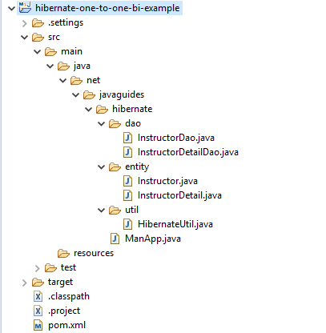

JPA/Hibernate One to One Mapping Annotation Example
In this tutorial, we will learn how to implement step by step one-to-one entity mapping using JPA and Hibernate and MySQL database.
The @OneToOne JPA annotation is used to map the source entity with the
target entity.
In this example, we create Instructor and InstructorDetail entities and we make a one-to-one mapping between them.

We will implement CRUD (create/save, read, update, delete) operations for Instructor and InstructorDetail entities.
>For Instructor DAO CRUD operations:
void saveInstructor(Instructor instructor);
void updateInstructor(Instructor instructor);
void deleteInstructor(int id);
Instructor getInstructor(int id);
For InstructorDetailDao DAO CRUD operations:
void saveInstructorDetail(InstructorDetail instructorDetail);
void updateInstructorDetail(InstructorDetail instructorDetail);
InstructorDetail getInstructorDetail(int id);
Development Steps
- Create a Simple Maven Project
- Project Directory Structure
- Add jar Dependencies to pom.xml
- Creating the JPA Entities(Persistent classes)
- Create Hibernate DAO Classes
- Create a Hibernate configuration file - HibernateUtil.java (Java Configuration)
- Create the Main class and Run an Application
1. Create a Simple Maven Project
Use the How to Create a Simple Maven Project in Eclipse article to create a simple Maven project in Eclipse IDE.
2. Project Directory Structure
Let's create a packaging structure for the above-created simple maven project. Refer to the below screenshot for your reference.
Add dependencies to pom.xml
We are using MySQL database so add MySQL dependency to pom.xml:
<project
xmlns="http://maven.apache.org/POM/4.0.0"
xmlns:xsi="http://www.w3.org/2001/XMLSchema-instance"
xsi:schemaLocation="http://maven.apache.org/POM/4.0.0 http://maven.apache.org/xsd/maven-4.0.0.xsd">
<modelVersion>4.0.0</modelVersion>
<parent>
<groupId>net.javaguides.hibernate</groupId>
<artifactId>hibernate-tutorial</artifactId>
<version>0.0.1-SNAPSHOT</version>
</parent>
<artifactId>hibernate-one-to-one-example</artifactId>
<properties>
<project.build.sourceEncoding>UTF-8</project.build.sourceEncoding>
</properties>
<dependencies>
<!-- https://mvnrepository.com/artifact/mysql/mysql-connector-java -->
<dependency>
<groupId>mysql</groupId>
<artifactId>mysql-connector-java</artifactId>
<version>8.0.13</version>
</dependency>
<!-- https://mvnrepository.com/artifact/org.hibernate/hibernate-core -->
<dependency>
<groupId>org.hibernate</groupId>
<artifactId>hibernate-core</artifactId>
<version>5.3.7.Final</version>
</dependency>
</dependencies>
<build>
<sourceDirectory>src/main/java</sourceDirectory>
<plugins>
<plugin>
<artifactId>maven-compiler-plugin</artifactId>
<version>3.5.1</version>
<configuration>
<source>1.8</source>
<target>1.8</target>
</configuration>
</plugin>
</plugins>
</build>
</project>
Creating the JPA Entities(Persistent classes)
We are creating a unidirectional mapping, we have placed @OneToOne
annotation on the Instructor entity so
that the instuctor_detail_id will create in an instructor table.
Instructor JPA Entity
package net.javaguides.hibernate.entity;
import javax.persistence.CascadeType;
import javax.persistence.Column;
import javax.persistence.Entity;
import javax.persistence.GeneratedValue;
import javax.persistence.GenerationType;
import javax.persistence.Id;
import javax.persistence.JoinColumn;
import javax.persistence.OneToOne;
import javax.persistence.Table;
@Entity
@Table(name = "instructor")
public class Instructor {
@Id
@GeneratedValue(strategy = GenerationType.IDENTITY)
@Column(name = "id")
private int id;
@Column(name = "first_name")
private String firstName;
@Column(name = "last_name")
private String lastName;
@Column(name = "email")
private String email;
@OneToOne(cascade = CascadeType.ALL)
@JoinColumn(name = "instructor_detail_id")
private InstructorDetail instructorDetail;
public Instructor() {
}
public Instructor(String firstName, String lastName, String email) {
this.firstName = firstName;
this.lastName = lastName;
this.email = email;
}
public int getId() {
return id;
}
public void setId(int id) {
this.id = id;
}
public String getFirstName() {
return firstName;
}
public void setFirstName(String firstName) {
this.firstName = firstName;
}
public String getLastName() {
return lastName;
}
public void setLastName(String lastName) {
this.lastName = lastName;
}
public String getEmail() {
return email;
}
public void setEmail(String email) {
this.email = email;
}
public InstructorDetail getInstructorDetail() {
return instructorDetail;
}
public void setInstructorDetail(InstructorDetail instructorDetail) {
this.instructorDetail = instructorDetail;
}
}
InstructorDetail JPA Entity
package net.javaguides.hibernate.entity;
import javax.persistence.Column;
import javax.persistence.Entity;
import javax.persistence.GeneratedValue;
import javax.persistence.GenerationType;
import javax.persistence.Id;
import javax.persistence.Table;
@Entity
@Table(name = "instructor_detail")
public class InstructorDetail {
@Id
@GeneratedValue(strategy = GenerationType.IDENTITY)
@Column(name = "id")
private int id;
@Column(name = "youtube_channel")
private String youtubeChannel;
@Column(name = "hobby")
private String hobby;
public InstructorDetail() {
}
public InstructorDetail(String youtubeChannel, String hobby) {
this.youtubeChannel = youtubeChannel;
this.hobby = hobby;
}
public int getId() {
return id;
}
public void setId(int id) {
this.id = id;
}
public String getYoutubeChannel() {
return youtubeChannel;
}
public void setYoutubeChannel(String youtubeChannel) {
this.youtubeChannel = youtubeChannel;
}
public String getHobby() {
return hobby;
}
public void setHobby(String hobby) {
this.hobby = hobby;
}
}
Create Hibernate DAO Classes
InstructorDao.java
package net.javaguides.hibernate.dao;
import org.hibernate.Session;
import org.hibernate.Transaction;
import net.javaguides.hibernate.entity.Instructor;
import net.javaguides.hibernate.util.HibernateUtil;
public class InstructorDao {
public void saveInstructor(Instructor instructor) {
Transaction transaction = null;
try (Session session = HibernateUtil.getSessionFactory().openSession()) {
// start a transaction
transaction = session.beginTransaction();
// save the student object
session.save(instructor);
// commit transaction
transaction.commit();
} catch (Exception e) {
if (transaction != null) {
transaction.rollback();
}
e.printStackTrace();
}
}
public void updateInstructor(Instructor instructor) {
Transaction transaction = null;
try (Session session = HibernateUtil.getSessionFactory().openSession()) {
// start a transaction
transaction = session.beginTransaction();
// save the student object
session.update(instructor);
// commit transaction
transaction.commit();
} catch (Exception e) {
if (transaction != null) {
transaction.rollback();
}
e.printStackTrace();
}
}
public void deleteInstructor(int id) {
Transaction transaction = null;
try (Session session = HibernateUtil.getSessionFactory().openSession()) {
// start a transaction
transaction = session.beginTransaction();
// Delete a instructor object
Instructor instructor = session.get(Instructor.class, id);
if (instructor != null) {
session.delete(instructor);
System.out.println("instructor is deleted");
}
// commit transaction
transaction.commit();
} catch (Exception e) {
if (transaction != null) {
transaction.rollback();
}
e.printStackTrace();
}
}
public Instructor getInstructor(int id) {
Transaction transaction = null;
Instructor instructor = null;
try (Session session = HibernateUtil.getSessionFactory().openSession()) {
// start a transaction
transaction = session.beginTransaction();
// get an instructor object
instructor = session.get(Instructor.class, id);
// commit transaction
transaction.commit();
} catch (Exception e) {
if (transaction != null) {
transaction.rollback();
}
e.printStackTrace();
}
return instructor;
}
}
InstructorDetailDao.java
package net.javaguides.hibernate.dao;
import org.hibernate.Session;
import org.hibernate.Transaction;
import net.javaguides.hibernate.entity.InstructorDetail;
import net.javaguides.hibernate.util.HibernateUtil;
public class InstructorDetailDao {
public void saveInstructorDetail(InstructorDetail instructorDetail) {
Transaction transaction = null;
try (Session session = HibernateUtil.getSessionFactory().openSession()) {
// start a transaction
transaction = session.beginTransaction();
// save the student object
session.save(instructorDetail);
// commit transaction
transaction.commit();
} catch (Exception e) {
if (transaction != null) {
transaction.rollback();
}
e.printStackTrace();
}
}
public void updateInstructorDetail(InstructorDetail instructorDetail) {
Transaction transaction = null;
try (Session session = HibernateUtil.getSessionFactory().openSession()) {
// start a transaction
transaction = session.beginTransaction();
// save the student object
session.update(instructorDetail);
// commit transaction
transaction.commit();
} catch (Exception e) {
if (transaction != null) {
transaction.rollback();
}
e.printStackTrace();
}
}
public InstructorDetail getInstructorDetail(int id) {
Transaction transaction = null;
InstructorDetail instructor = null;
try (Session session = HibernateUtil.getSessionFactory().openSession()) {
// start a transaction
transaction = session.beginTransaction();
// get an instructor object
instructor = session.get(InstructorDetail.class, id);
// commit transaction
transaction.commit();
} catch (Exception e) {
if (transaction != null) {
transaction.rollback();
}
e.printStackTrace();
}
return instructor;
}
}
Create a Hibernate configuration file - HibernateUtil.java (Java Configuration)
The HibernateUtil Java configuration file contains information about the
database and mapping file.
Let's create a HibernateUtil file and write the following code in it.
package net.javaguides.hibernate.util;
import java.util.Properties;
import org.hibernate.SessionFactory;
import org.hibernate.boot.registry.StandardServiceRegistryBuilder;
import org.hibernate.cfg.Configuration;
import org.hibernate.cfg.Environment;
import org.hibernate.service.ServiceRegistry;
import net.javaguides.hibernate.entity.Course;
import net.javaguides.hibernate.entity.Instructor;
/**
* Java based configuration
* @author ramesh Fadatare
*
*/
public class HibernateUtil {
private static SessionFactory sessionFactory;
public static SessionFactory getSessionFactory() {
if (sessionFactory == null) {
try {
Configuration configuration = new Configuration();
// Hibernate settings equivalent to hibernate.cfg.xml's properties
Properties settings = new Properties();
settings.put(Environment.DRIVER, "com.mysql.cj.jdbc.Driver");
settings.put(Environment.URL, "jdbc:mysql://localhost:3306/javafx_demo?useSSL=false");
settings.put(Environment.USER, "root");
settings.put(Environment.PASS, "root");
settings.put(Environment.DIALECT, "org.hibernate.dialect.MySQL5InnoDBDialect");
settings.put(Environment.SHOW_SQL, "true");
settings.put(Environment.CURRENT_SESSION_CONTEXT_CLASS, "thread");
settings.put(Environment.HBM2DDL_AUTO, "create-drop");
configuration.setProperties(settings);
configuration.addAnnotatedClass(Instructor.class);
configuration.addAnnotatedClass(Course.class);
ServiceRegistry serviceRegistry = new StandardServiceRegistryBuilder()
.applySettings(configuration.getProperties()).build();
System.out.println("Hibernate Java Config serviceRegistry created");
sessionFactory = configuration.buildSessionFactory(serviceRegistry);
return sessionFactory;
} catch (Exception e) {
e.printStackTrace();
}
}
return sessionFactory;
}
}
Create the Main class and Run an Application
package net.javaguides.hibernate;
import net.javaguides.hibernate.dao.InstructorDao;
import net.javaguides.hibernate.entity.Instructor;
import net.javaguides.hibernate.entity.InstructorDetail;
public class ManApp {
public static void main(String[] args) {
Instructor instructor = new Instructor("Ramesh", "Fadatare", "ramesh@javaguides.com");
InstructorDetail instructorDetail = new InstructorDetail("http://www.youtube.com", "Guitar");
instructor.setInstructorDetail(instructorDetail);
InstructorDao instructorDao = new InstructorDao();
instructorDao.saveInstructor(instructor);
}
}
Output
Conclusion
In this tutorial, we successfully built a project from scratch and learned how to map a one-to-one database relationship using Hibernate/JPA.